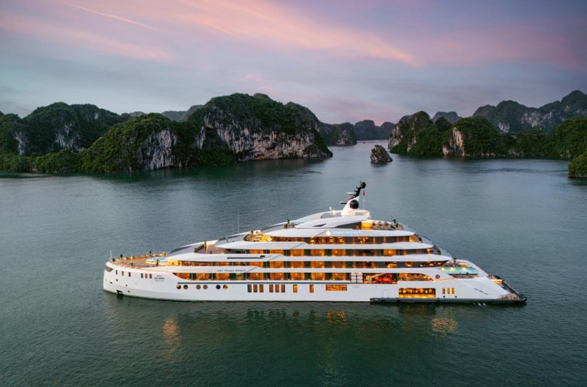
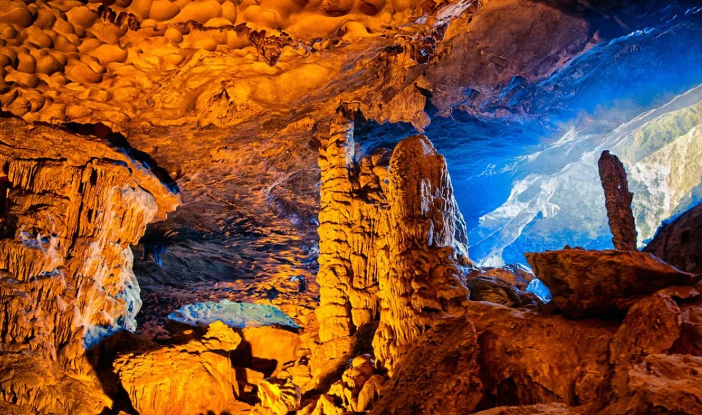
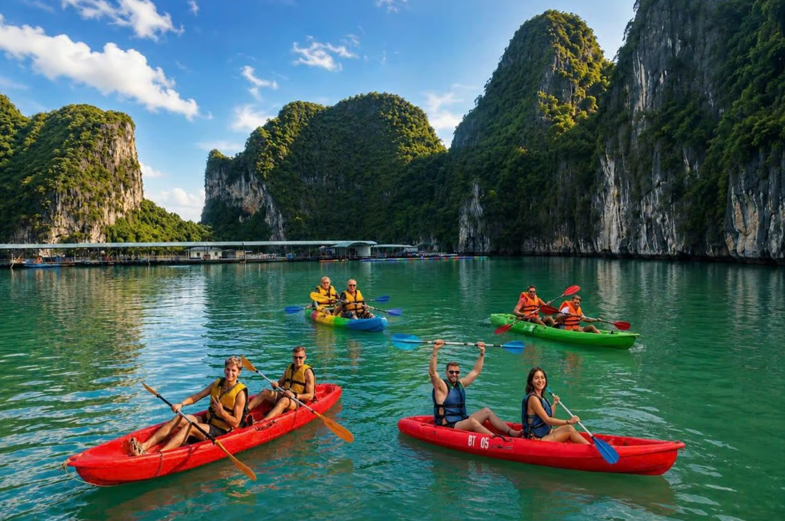

01 海灣遊船 Du thuyền Hạ Long
遊船是欣賞海灣的主要方式，沿途能看見水面、岩島與不同角度的海岸景色。日間與過夜行程各有節奏，實際停靠點依船公司與核准路線而定。
- 推薦理由
- 喜歡看風景的家人可以待在船上，也能選擇附帶靠岸活動的路線。
- 家庭旅遊提醒
- 先問清楚上下船方式、救生衣、用餐及是否需要轉乘小船；容易暈船者可選較短行程，天氣不佳時依業者與管理單位安排調整。
01 / NORTHERN VIETNAM
位於越南北部廣寧沿海，下龍灣的風景是在海上慢慢展開的：一座座石灰岩島嶼、島間水道，以及藏在岩壁裡的洞穴。選好一條適合的遊船路線，坐在甲板看風景，也可以把步行與划船安排進去。
先挑遊船路線，再決定洞穴與水上活動；不需要把所有體驗排進同一天。

A CLOSER LOOK
挑喜歡的體驗，留一點時間給休息與沿途風景。

遊船是欣賞海灣的主要方式，沿途能看見水面、岩島與不同角度的海岸景色。日間與過夜行程各有節奏，實際停靠點依船公司與核准路線而定。

驚訝洞是下龍灣的洞穴遊覽選擇之一，岩石形成的空間與鐘乳石，讓海灣旅行多了一段走進地形內部的體驗。是否停靠請依實際航線確認。
資料來源：官方：Ha Long 洞穴介紹

離開大船後，獨木舟與有人划行的小船能帶旅客近看岩壁與水道。參加方式與開放水域不同，訂船時先確認是否包含這項活動。
資料來源：官方：海灣水上體驗
MAKE TIME FOR THE JOURNEY
以下為編輯行程建議，並非固定套裝路線；請依天氣、同行者體力與實際預訂調整。
核對碼頭、集合方式、餐食與停靠項目，留出接駁與上下船緩衝。
在甲板看風景，再按家人體力選洞穴或水上活動，不必每站都參加。
不要接著安排緊湊長途移動；若住船，翌日安排依船公司行程調整。
每一天保留一個可以省略的安排，比趕完清單更容易享受旅行。
BEFORE YOU GO
交通概況參考：Vietnam Tourism：Ha Long，更新日期：2026-11-15。班次、費用及接送服務另行確認。
以上為規劃建議，不是場館設施或服務保證。
WHERE NEXT?
內容更新：。行程、推薦理由與家庭提醒為編輯建議；票價、場次及開放狀況請於出發前向官方確認。照片為景觀紀錄，不代表當日天氣或最新設施。
網路圖片縮小尺寸並作版面裁切；CC BY-SA 圖片的衍生版本沿用相同授權。使用者提供照片依其提供脈絡標示，來源狀態如實記錄。
.jpg){kind=link}
_(38514059342).jpg){kind=link}